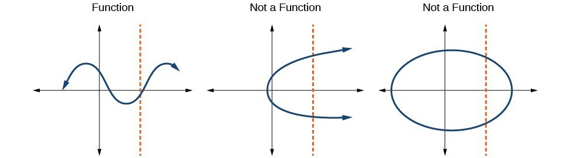
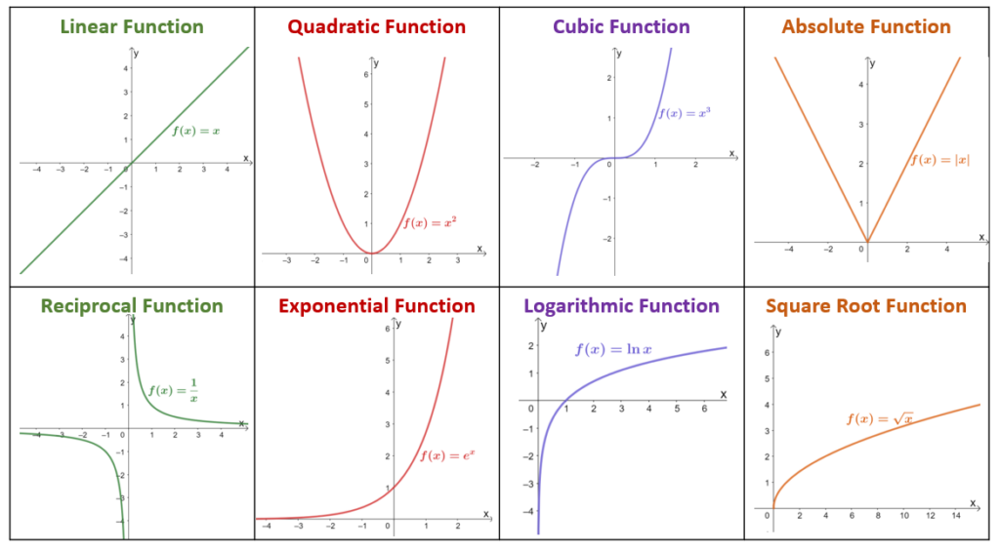
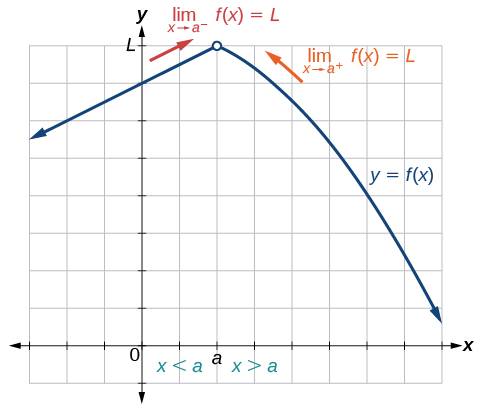
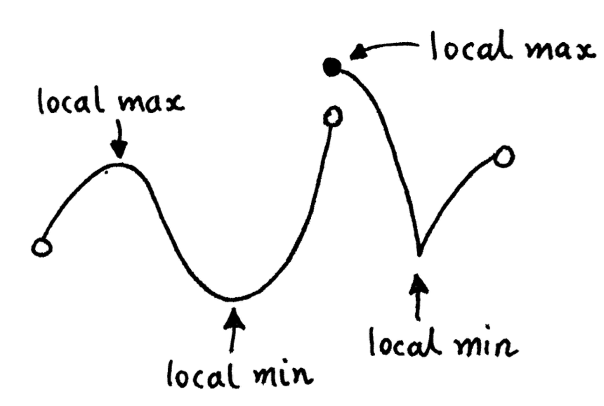
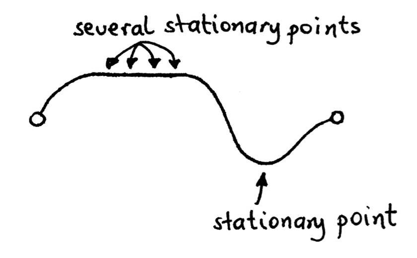
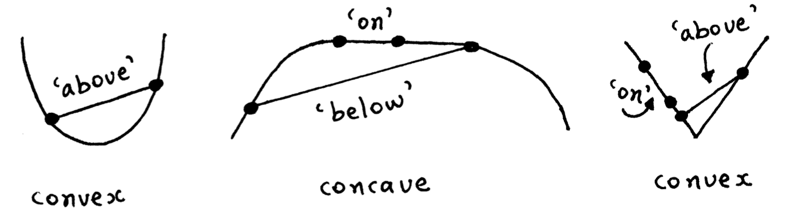
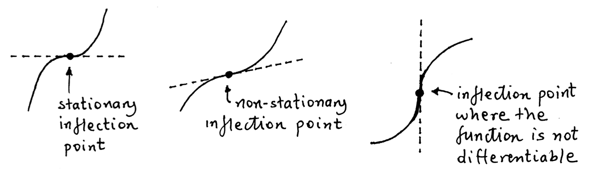
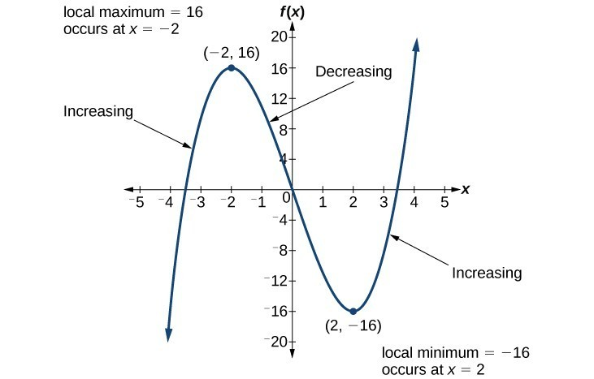
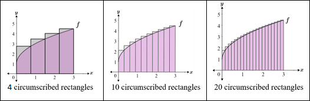

Quantitative Methods (for Social Scientists)
Volume I: Calculus and Statistical Theory
Preface
This book is one of the 5 companion-guides in the Quantitative Methods sequence, which provides the mathematics and statistics content useful for the study of Political Economics. The Quantitative Methods sequence consists of five volumes:
- Volume I: Calculus and Statistical Theory (this volume)contains essential mathematics for Political Economics. Covers topics in single variable calculus, probability theory, and statistical theory.
- Volume II: Linear Algebra and Multivariate Calculus covers topics in linear algebra and calculus. Highly recommended, but not formally required for Political Economics.
- Volume V: Proof and Analysis covers introductory proofs in mathematics. Useful, but not essential for the rest of the Political Economics.
The 1st volume is a pre-requisite for the main series on Political Economics, and covers the core techniques in calculus, probability, and statistics needed. The 2nd volume is more advanced topics that are useful, but not formally required. Volume 3 contains advanced topics that are not required, but can be useful and interesting to those who enjoy Political Economics
This volume is a collection of mathematical and statistical topics that I consider to be essential to understand prior to starting any serious instruction in Political Economics. The book assumes a solid understanding of high-school level algebra, and discusses topics in algebra, single variable calculus, and probability and statistical theory. Note that this book is not a full mathematics course of those topics - topics have been selected based on what is commonly used in Political Economics and other social sciences.
Algebra and Pre-Calculus
Topics in Algebra
Set Theory
Introduction to Sets
A set is a collection of objects. The objects within a set are the elements of that set. We can define a set by either listing every element out, or through describing the properties of the elements of the set.
- For example, \(A = \{1,2,3,4,5\}\), or, \(A=\{n \in \mathbb{Z}: 1 ≤ n ≤ 5\}\) - or in other words, \(A\) is the set of values of \(n\) is in the set of all integers \(Z\), such that \(n\) is between 1 and 5 inclusive.
Here are some common notation for sets:
If two sets \(A\) and \(B\) have the same elements, they are equal: \(A = B\).
If \(a\) is an element of set \(A\), we use the notation: \(a \in A\).
If \(a\) is not an element of set \(A\), we use the notation: \(a \notin A\).
If all elements of set \(A\) are also within set \(B\), then it is considered a subset, and notated \(A \subseteq B\).
If \(A \subseteq B\), but \(A ≠ B\), then \(A\) is a proper subset of \(B\), notated: \(A \subset B\).
Set Operations
There are a few common operations of sets:
The union of sets \(A\) and \(B\), notated \(A \cup B\), is the set of elements that belong to either \(A\) or \(B\). For example, if \(A = \{1,2,3\}, B = \{3,4,5\}\), then \(A \cup B = \{1,2,3,4,5\}\).
The intersection of sets, notated \(A \cap B\), is the set of elements that belong to \(A\) and \(B\). For example, if \(A = \{1,2,3\}, B = \{3,4,5\}\), then \(A \cap B = \{3\}\).
The cardinality of a set \(A\) is the number of elements within set \(A\), and is notated \(|A|\). For example, if \(A = \{1,2,3\}\), then \(|A| = 3\). An empty set is a set with a cardinality of 0, or in other words, with no elements. It is notated with \(\varnothing\)
Types of Sets and Notation
A infinite set is one with infinitely many elements. Common examples of infinite sets include:
Set of all natural numbers \(\mathbb{N} = \{1,2,3,...\}\).
Set of all integers \(\mathbb{Z} = \{..., -2, -1, 0, 1, 2, ... \}\).
Set of all real numbers \(\mathbb{R}\), which is any number on the real number line.
The set of all real numbers \(\mathbb{R}\) is the most common used set. A subset of \(\mathbb{R}\) is called an interval, and can be notated with either brackets or parentheses as follows:
Closed interval: \([a,b] = \{ x \in \mathbb{R} | a ≤ x ≤ b \}\)
Open interval: \((a, b) = \{ x \in \mathbb{R}|a < x < b \}\)
We can also mix closed and open intervals: \([a, b) = \{ x \in \mathbb{R}|a≤x<b\}\)
In all these intervals, \(a\) and \(b\) are called endpoints of the interval. Any point inside of an interval that is not an endpoint is an interior point.
Solving Equations
Solving Equations with One Variable
To solve an equation with one variable, we look to isolate the variable on one side. We can do this by either adding/subtracting to both sides of the equation, or multiplying/dividing the equation on both sides by the same value.
Example: Solve for \(x\) in the equation: \(\frac{x+3}{4} = 6\)
- Multiply both sides by 4: \(4 \left( \frac{x+3}{4}\right) = 6 \times 4\)
- Simplify to get: \(x+3 - 24\)
- Now, subtract 3 from both sides: \(x+3 - 3 = 24 -3\)
- Thus, we get \(x = 21\)
Solving Inequalities
Solving inequalities is the same as solving equations (for both one variable, and more, as we will see later). There is only one difference: if we multiply both sides by a negative number, we flip the direction of the inequality sign.
Solving System of Equations
To solve a system of equations (such as 2 different equations with 2 variables \(x\) and \(y\)), we do the following procedure:
- With one of the equations, solve for one of the variables (either \(x\) or \(y\) generally)
- Substitute that equation that we just solved, into the other equation. This will make that equation only have one variable. Solve that equation for the remaining variable.
- Then, plug the variable we have found, into either of the original equations, and find the value of the other variable.
The solution to a system of equations is also the point where the two lines meet on a graph.
Example: Solve the system of equations: \(3x + 2y = 13\), \(x - 2y = 3\).
- First, solve one of the equations for one of the variables.
- Let us take \(x - 2y = 3\). We can solve for \(x\) to get: \(x = 2y+3\)
- Now, plug the equation we just got into the other equation
- The other equation is \(3x + 2y = 13\). Plug in the \(x\) we found: \(3(2y+3) + 2y = 13\)
- Now, solve that equation for the remaining variable:
- \(3(2y+3)+2y = 13 \Longrightarrow 6y + 9 +2y = 13 \Longrightarrow 8y = 4 \Longrightarrow y = \frac{1}{2}\)
- Now, plug \(y\) back into either equation to find \(x\):
- \(x = 2y+3\) that we solved for earlier. Plug in \(y\) to get \(x =2(\frac{1}{2}) +3 = 4\)
Thus, the solution to the system of equations is \(x=4, y = \frac{1}{2}\)
Factoring and Expansion
Factorisation is the process of changing an equation from the form \(ax^2+bx+c\) to the form \((x+i)(x+j)\). To do this, we need to:
- Find 2 numbers \(i\) and \(j\), that sum to \(b\), and multiply to \(c\)
- Once we have done that, simply put it into the form \((x+i)(x+j)\)
Example: Factor \(x^2 + 5x + 6\)
- We need to find two numbers \(i\) and \(j\), that add to 5, and multiply to 6.
- \(2\) and \(3\) are two numbers that add to 5, while multiplying to 6.
- Now, put it into the factored form: \((x+2)(x+3)\)
There is a special form of factoring: difference of squares.
Essentially, any expression that takes the form of \(a^2 - b^2\) can be rewritten as \((a+b)(a-b)\).
For example: \(x^2 - 9 = (x+3)(x-3)\).
Multiplication expansion undoes factoring. To do this, we must multiply each term of one section by each other term of the other section. This is more intuitive with an example.
Example: let us prove the difference of squares idea we saw earlier - multiply out \((x+3)(x-3)\): \[ \begin{split} (x+3)(x-3) & = (x \times x) + (x \times -3) + (3 \times x) + (3 \times -3) \\ & = x^2 - 3x + 3x -9 \\ &= x^2 - 9 \end{split} \]
So we can see, that indeed, difference of squares is true, and \(x^2 - 9 = (x+3)(x-3)\).
Exponents and Logarithms
Exponents
Here are a few key properties of exponents that are important to note:
- \(a^x \times a^y = a^{x+y}\) and \(a^x / a^y = a^{x-y}\)
- \(a^{-x} = \frac{1}{a^x}\)
- \((a^x)^y = a^{xy}\)
- \(a^0 = 1\)
- \((a \times b)^n = a^n \times b^n\) and \((a/b)^n = a^n / b^n\)
Sometimes, you will have an equation that takes the form \(x^n = a\), where \(n\) is some number.
How to get rid of \(n\) to isolate \(x\)?
We know that \(n \times (1/n) = 1\).
We also know that \((a^x)^y = a^{xy}\). Thus: \[ \begin{split} & (x^n)^{(1/n)} = a^{(1/n)} \\ & x^{n \times (1/n)} =x^1 = x = a^{(1/n)} \\ & \text{thus}, x = a^{1/n} \end{split} \]
Logarithms
Logarithms are the inverse for exponential functions. The relationship is as follows:
\[ y = \log_a(x) \Longrightarrow a^y = x \]
Or more intuitively, take the example \(y = \log_2(8)\) is basically asking, what power \(y\) should I take base 2 to, in order to get an answer of \(8\).
- Of course, \(2^3 = 8\), so the answer is \(y=3\).
Here are a few key properties to know about logarithms.
- \(\log(xy) = \log(x) + \log(y)\) and \(\log(x/y) = \log(x) - \log(y)\)
- \(\log(x^y) = y \times \log(x)\)
- \(-\log(x) = \log(1/x)\)
- \(\log(1) = \log(e^0) = 0\)
Note that in statistics, when we say \(\log(x)\), we are talking about natural logs (base \(e\)). We will specify any other base with a subscript in the logarithm. We can change the base of logarithms with the following formula:
\[ \log_b(x) = \frac{\log_a(x)}{\log_a(b)} \]
Summation and Product Notation
Summation Notation
Summation Notation is a way of expressing the sums of many values:
\[ \sum\limits_{i=1}^n x_i = x_1 + x_2 + ... + x_n \]
\(i = 1\) indicates that we start summing from index \(i=1\), or basically, we start with \(x_1\).
\(n\) is the value of the index at which we stop summing. This is often the sample size.
\(x_i\) is the value of an element within set \(X = \{x_1, x_2, ..., x_n \}\) with index \(i\). For example, is \(i = 1\), \(x_i = x_1\), the first element in set \(X\).
Summation notation has a few properties:
- \(\sum cx_i = c \times \sum x_i\), where \(c\) is some constant.
- \(\sum (x_i + y_i) = \sum x_i + \sum y_i\)
- \(\sum\limits_{i=1}^n c = n \times c\), where \(c\) is some constant.
Product Notation
Product notation is a way of expressing the products of many values:
\[ \prod\limits_{i=1}^n x_i = x_1 \times x_2 \times ... \times x_n \]
\(i = 1\) indicates that we start multiplying from index \(i=1\), or basically, we start with \(x_1\).
\(n\) is the value of the index at which we stop multiplying. This is often the sample size.
\(x_i\) is the value of an element within set \(X = \{x_1, x_2, ..., x_n \}\) with index \(i\). For example, is \(i = 1\), \(x_i = x_1\), the first element in set \(X\).
Product notation has the following properties:
- \(\prod cx_i = c^n \times \prod x_i\), where \(c\) is some constant.
- \(\prod\limits_{i=1}^nc = c^n\), where \(c\) is some constant.
Converting Between Sum and Product Notation
We can convert between summation and product notation with the properties of logarithms::\[ \begin{split} \log \left( \prod\limits_{i=1}^n cx_i \right) & = \log(cx_1 \times cx_2 \times ... \times cx_n) \\ & = \log(c^n \times x_1 \times x_2 \times ... \times x_n) \\ & = \log(c^n) + \log(x_1) + \log(x_2) + ... + \log(x_n) \\ & =n \log(c) + \sum\limits_{i=1}^n \log(x_i) \end{split} \]
Pre-Calculus Topics
Functions and the Cartesian Plane
Functions
We have two sets, \(X\) and \(Y\). A function \(f : X \rightarrow Y\) is some rule, which assigns each element \(x \in X\) to one, and only one element \(y = f(x) \in Y\).
- For every input \(x \in X\), we must only have one output \(y \in Y\). If we have two outputs, that is not a function.
The domain of \(f\) is the set of possible values of set \(X\). Basically, what values can we input into \(f(x)\).
The set of possible outputs of function \(f\) is the range \(R(f)\), and the range must be a subset of the set of \(Y\): \(R(f) \subseteq Y\).
Functions to not have to only have one input variable. For example, we can have a function \(f(x,z)\), with two input values \(x \in X\) and \(z \in Z\), notated \(f:X,Z \rightarrow Y\).
- However, we once again can only have one output \(y \in Y\) for each different input \((x,z)\). If we have multiple outputs for one input, that is not a function.
Cartesian Plane
Remember that \(\mathbb{R}\) is the set of all real numbers \(\mathbb{R} = (-∞, ∞)\). That space is only one dimensional - a single number line. \(\mathbb{R}^2\) is a 2 dimensional space - essentially two number lines, one perpendicular to the other. Essentially, a graph with \(x\) and \(y\)-axes. This 2-dimensional space is called a cartesian plane.
Every single point in the 2-dimensional cartesian plane can be specified with coordinates \((a,b)\), where both \(a \in \mathbb{R}\) and \(b \in \mathbb{R}\). \(a\) is the \(x\) coordinate, and \(b\) is the \(y\) coordinate - both who represent the distance from the origin with coordinates \((0, 0)\).
Any real-valued function of one variable can be represented in the \(\mathbb{R}^2\) space. On the \(x\)-axis, we put the input number, and on the \(y\)-axis, we put the output of the function. For each input variable value, there must only be one output variable value. Graphically in \(\mathbb{R}^2\), we can show this:

Of course, functions can be in more than 2 dimensions. A function with two input variables \(f(x,z)\), would be depicted in the 3-dimensional space \(\mathbb{R}^3\), as \(x \in \mathbb{R}\), \(z \in \mathbb{R}\), and output \(f(x) \in \mathbb{R}\). The more input variables, the more dimensions the function is depicted in.
Common Types of Functions
There are a few very common types of functions that we will encounter:

Slope and Zeroes of Functions
Linear Equations and Slope
Linear equations take the form \(f(x) = mx+b\), where \(m\) is the slope.
More formally, slope is the change in \(y\) over the change in \(x\), or the amount \(y\) changes, for every increase of one unit of \(x\).We can calculate the slope between two points \((x_1, y_1)\) and \((x_2, y_2)\) as follows:
\[ m = \Delta y / \Delta x = \frac{y_2 - y_1}{x_2 - x_1} \]
Zeroes and Roots of Functions
The zeroes/roots of a function are the input values of the function that make the output function equal to 0.
Mathematically, for what \(x\) does \(f(x) = 0\).
Graphically. Since output \(f(x)\) is graphed on the \(y\)-axis, we can see at what \(x\)-values the function cross the line \(y=0\) (the \(x\)-axis line).
To solve for zeroes/roots, simply set the function equal to 0, and solve for \(x\).
- Some functions can have more than one zero, especially polynomials, and some can have none.
Example: Find the root of \(f(x) = x -5\)
- Set function output equal to 0: \(0 = x-5\)
- Solve for \(x\) and we get: \(x = 5\).
For quadratic functions, there are two ways to find roots. We can factor, covered in section 1.2.
Example: Find the root of \(f(x) = x^2 + 5x +6\)
- Set function output equal to 0: \(0 = x^2 + 5x + 6\)
- Factor: \(0 = (x+2)(x+3)\)
- \(x=-2\) and \(x=-3\) make this equation true.
We can also use the quadratic formula to find the roots of unfactorable equations. Given a quadratic in the form of \(ax^2 + bx + c\), the roots are:
\[ x = \frac{-b ± \sqrt{b^2 - 4ac} }{2a} \]
Note: we will often have two roots in quadratics (although not always).
Special Types of Functions
Composite Functions
Composite functions are when the output of one function, is used as the input of another function. Composite functions are defined as the following:
\[ f \circ g = f[g(x)] \]
Essentially, we calculate the output value of \(g(x)\), and immediately input that value into \(f(x)\).
For example, if \(h(x) = x^2\), and \(f(x) = x-5\), then \(f \circ h = (x^2) - 5\)
- Note, \(f \circ h\) and \(h \circ f\) are different, so make sure you are doing the correct one!
Surjective, Injective, and Bijective Functions
A function \(f:X \rightarrow Y\) is a surjective function if its range is equal to the set of \(Y\). Mathematically, \(R(f) = Y\).
In other words, for all \(y \in Y\), there exists an \(x \in X\) such that \(f(x) = y\).
For example: \(f(x)=x\) is surjective, as the range of \(f(x) = x\) is \((-∞, ∞)\), which covers the entire set of \(Y\). Thus, \(R(f) = Y\).
A function \(f:X \rightarrow Y\) is an injective function if distinct inputs are mapped to distinct outputs. Basically, no two input values of \(x \in X\) produce the same value output \(f(x)\).
Mathematically, for all \(x_1 \in X, x_2 \in X\), if \(x_1 ≠ x_2\), then \(f(x_1) ≠ f(x_2)\)
For example: \(f(x) = x\) is injective, because no two inputs of \(x\) produce the same output \(f(x)\).
A function is bijective if it is both injective and surjective.
- \(f(x) = x\), as we have shown previously is both injective and surjective, and thus bijective.
Inverse Function
Let \(f: X \rightarrow Y\) be a bijective function. The sets \(X\) and \(Y\) are such that \(X \subseteq \mathbb{R}\) and \(Y \subseteq \mathbb{R}\). There is some unique function \(f^{-1} : Y \rightarrow X\), called the inverse function of \(f\), which is essentially the opposite of function \(f\): when you input the ouputs of \(f(x)\) into \(f^{-1}\), you get the respective input of \(f(x)\).
- Or mathematically: \(y = f(x)\) if and only if \(x = f^{-1}(y)\)
Because \(f^{-1}\) essentially reverses function \(f(x)\), the following must be true:
\[ \begin{split} & f^{-1} (f(x)) = x \text{ for all } x \in X \\ & f(f^{-1}(y)) = y \text{ for all } y \in Y \end{split} \]
To find the inverse function, we simply solve for the input variable.
Example: Find the inverse of \(f(x) = 2x+3\)
- Let us define \(y\) as the output of \(f(x)\), such that \(f(x) = y = 2x+3\)
- Now, solve for \(x\): \(y = 2x+3 \Longrightarrow 2x = y-3 \Longrightarrow x = \frac{y-3}{2}\)
Let us prove that this is an inverse function with the properties we showed above. \[ \begin{split} & \text{1st property: }f^{-1} (f(x)) = x \text{ for all } x \in X \\ & f^{-1}(y) = \frac{y-3}{2} \Longrightarrow f^{-1}(f(x)) = \frac{(2x + 3) - 3}{2} = \frac{2x}{2} = x \\ & \text{2nd property } f(f^{-1}(y)) = y \text{ for all } y \in Y \\ & f(x) = 2x +3 \Longrightarrow f(f^{-1}(y)) = 2\left( \frac{y - 3}{2} \right) + 3=y-3+3 = y \end{split} \]
Limits
A limit is when a function approaches some specific output value \(y=f(x) = L\), as the input \(x\) moves closer and closer to some value \(c\).
Or more intuitively, as the \(x\) value becomes infinitely closer to \(x=c\), the \(y=f(x)\) value becomes infinitely close to \(f(x) = L\).
Limits are notated with the form: \(\lim\limits_{x \rightarrow c} f(x) = L\)
For example, the figure below shows a function with a limit:

For a limit to exist, it must approach the same \(y\) value \(L\), from both sides of \(x = c\).
- For example, in the figure above, from both the left and right of \(x=c\), the function \(f(x)\) approaches L. Thus, a limit exists here.
However, if the function were to approach different \(y\) values on both sides of \(x=c\), then there would be no limit.
- We can notate the limit from the left side of \(x=c\) as \(\lim\limits_{x^- \rightarrow c} f(x) = L\), and the limit from the right side of \(x=c\) as \(\lim\limits_{x^+ \rightarrow c} f(x) = L\).
Importantly, \(f(x)\) does not need to be defined at point \(x=c\) for the limit to exist.
- For example, the figure above has a function \(y=f(x)\) that is not defined at \(f(c)\), however, the limit still exists.
Properties of Limits
Let us have functions \(f\) and \(g\), where \(\lim\limits_{x \rightarrow c} f(x) = A\), and \(\lim\limits_{x \rightarrow c} f(x) = B\). The following properties are thus true:
- \(\lim\limits_{x \rightarrow c} [f(x) + g(x)] = \lim\limits_{x \rightarrow c} f(x) + \lim\limits_{x \rightarrow c} g(x)\)
- \(\lim\limits_{x \rightarrow c} [\alpha \times f(x) = \alpha \times \lim\limits_{x \rightarrow c} f(x)\), where \(\alpha\) is some constant.
- \(\lim\limits_{x \rightarrow c} [f(x) \times g(x)] = \lim\limits_{x \rightarrow c} f(x) \times \lim\limits_{x \rightarrow c}g(x)\)
- \(\lim\limits_{x \rightarrow c} [f(x) / g(x)] = \lim\limits_{x \rightarrow c} f(x) / \lim\limits_{x \rightarrow c}g(x)\)
Continuity
Continuity as a concept is quite intuitive: if a function has no breaks or jumps within an interval, then it is continuous within that interval.
We can express this intuition in more mathematical terms. Suppose that function \(f\) has some input interval containing \(x=c\). \(f\) is continuous at point \(c\), given these 2 criteria are both met:
- \(\lim\limits_{x \rightarrow c} f(x)\) exists, i.e. \(\lim\limits_{x^- \rightarrow c} f(x) = \lim\limits_{x^+ \rightarrow c} f(x)\).
- \(\lim\limits_{x \rightarrow c} f(x) = f(c)\).
These rules make sense intuitively:
- The limit must exist for continuity, since if a function approaches a different \(Y\) value on each side at a certain \(x=c\), then it cannot be continuous. Thus, the first condition must be true.
- If the function is not defined at \(c\), or is defined by not equal to the limit, that means there will be a break or jump in the function. Thus, the second condition must be true for continuity.
Let us assume functions \(f\) and \(g\) are both continuous at \(x=c\). Then, continuity has a few properties:
- \(f(x) + g(x)\) is continuous at \(x=c\).
- \(f(x) - g(x)\) is continuous at \(x=c\).
- \(f(x) \times g(x)\) is continuous at \(x=c\).
- \(|f(x)|\)$ is continuous at \(x=c\).
- \(\alpha \times f(x)\) is continuous at \(x=c\), where \(\alpha\) is some constant.
- \(f(x) / g(x)\) is continuous at \(x=c\) given \(g(c) ≠ 0\).
Finally, if \(f\) is continuous in interval \([a, b]\), then \(f\) must have a maximum and minimum value within \([a, b]\).
Single Variable Calculus
Derivatives
Definition of a Derivative
A derivative function \(f'\) outputs the slope (rate of change) of the function of \(f\) at any input. So, if we want to know the slope of \(f\) at \(f(a)\), we would plug \(a\) into \(f'\).
The figure shows a function \(f\) and a point \(P\). The red tangent line shows the slope at point \(P\):

We know the definition of slope between two points (from section 1.2) is:
\[ \Delta y / \Delta x = \frac{y_2 - y_1}{x_2 - x_1} \]
First, since we are dealing with functions where output \(y=f(x)\), let us replace the \(y\)’s in our equation with \(f(x)\)’s:
\[ \Delta y / \Delta x = \frac{f(x_2) - f(x_1)}{x_2 - x_1} \]
We can rewrite \(x_2\) and \(x_1\) relative to a single point of \(x\) as \(x_1 = x\) and \(x_2 = x+h\). Why? this is because point \(x_2\) is just some \(x\)-distance away from point \(x_1\). Now, let us replace \(x_1\) and \(x_2\) with \(x\) and \(x+h\):
\[ \Delta y / \Delta x = \frac{f(x+h) - f(x)}{x + h - x} = \frac{f(x+h) - f(x)}{h} \]
So that is essentially another way to rewrite the definition of a slope between two points.
However, the issue is, that a derivative is the slope at one point, not between two points. What we have calculated so far is the slope between two points (the secant green line in the figure above).
We need the red-tangent line - the slope at one point. How do we calculate the slope at one point?
To calculate the slope at one point, we can slowly move the two points \(x\) and \(x+h\) closer and closer to each other.
- How do we do that? With limits (that we covered in section 1.6). By making \(h\) smaller and smaller until it approaches 0, the two points will get closer and closer until they are on top of each other, and then, we will have the slope at one point.
Thus, below is the formal definition of a derivative. We can calculate any derivative with this rule (although, this can become difficult sometimes).
\[ f'(x) = \lim\limits_{h \rightarrow 0} \frac{f(x+h) - f(x)}{h} \]
A note on notation: so far, I have used \(f'\) (apostrophes) to notate a derivative. We can also use the form \(\frac{dy}{dx}\) to indicate a derivative. We can change \(y\) and \(x\) in this notation if we are using different variables.
Finally, it is also possible to take the derivative of a derivative. This is a second-order derivative, and we notate it \(f''\) (with two apostrophes).
Rules of Differentiation
You can calculate any derivative by plugging it into the formal definition from above. However, this can be tedious and involve a lot of algebra.
However, there are a few generalised forms of functions, whose derivatives are consistent. These rules allow us to quickly calculate derivatives.
- Note: these rules are all obtained from the definition of the derivative - they do not magically appear from thin air.
Standard Derivatives
Linear Rule: \([\alpha x]' = \alpha\), where \(\alpha\) is a constant.
Derivative of a constant: \([\alpha]' = 0\), where \(\alpha\) is a constant.
Power Rule: \([x^k]' = kx^{k-1}\), where \(k\) is some constant and \(x^k\) is a monomial.
Sum Rule: \([f(x) ± g(x)]' = f'(x) + g'(x)\).
Constant Rule: \([\alpha \times f(x)]' = \alpha \times f'(x)\), where \(\alpha\) is some constant.
Product Rule: \([f(x) \times g(x)]' = f'(x) \times g(x) + f(x) \times g'(x)\).
Quotient Rule: \([f(x)/g(x)]' = \frac{f'(x) \times g(x) + f(x) \times g'(x)}{[g(x)]^2}\).
Chain Rule: \([f(g(x))]' = f'[g(x)] \times g'(x)\) (used for composite/nested functions).
Exponential and Log Derivatives
Exponential: \([e^x]' = e^x\).
Exponential Nested: \([e^{u(x)}]' = e^{u(x)} \times u'(x)\).
Other Based Exponentials: \([b^x]' = \ln(b) \times b^x\).
Natural Log Derivative: \([\ln(x)]' = \frac{1}{x}\).
Log derivative with a power: \([\ln(x^k)]' = \frac{k}{x}\).
Nested Log Derivative: \([\ln(u(x))]' = \frac{u'(x)}{u(x)}\)
Trigonometric Derviatives
Derivative of sine: \([\sin(x)]' = \cos(x)\).
Derivative of cosine: \([\cos(x)]' = -\sin(x)\).
Example 1: Find the derivative of \(f(x) = 5x^4 - 6x^3 + x^2 - 5x + 6\).
- Sum rule says that \(f'(x) = [5x^4]' - [6x^3]' + [x^2]' - [5x]' + [6]'\)
- Constant rule says that \(f'(x) = 5[x^4]' - 6[x^3]' + [x^2]' - 5[x] + [6]'\)
- Power rule says that: \(f'(x) = 5(4x^3) - 6(3x^2) + (2x) - 5 + 0\)
- Simplify: \(f'(x) = 20x^3 - 18x^2 + 2x - 5 + 0\)
Example 2: Find the derivative of \(f(x) = (x^3)(2x^4)\).
Two methods to do this problem. Method 1 (product rule):
- Product rule says that \([f(x) \times g(x)]' = f'(x) \times g(x) + f(x) \times g'(x)\). Let us define \(f(x) = x^3\) and \(g(x) = 2x^4\).
- Let us find \(f'(x)\) and \(g'(x)\). Using power rule: \(f'(x) = 3x^2\), and \(g'(x) = 2[x^4]' = 2(4x^3) = 8x^3\)
- Put it into the product rule form: \(f'(x) = (3x^2)(2x^4) + (x^3)(8x^3)\).
- Simplify: \(f'(x) = 6x^6 + 8x^6 \Longrightarrow f'(x) =14x^6\).
Method 2 (power rule):
- Simplify \(f(x)\) to get \(f(x) = 2x^7\).
- Use constant rule and power rule: \(f'(x) = 2[x^7]' = 2(7x^6) \Longrightarrow f'(x) = 14x^6\)
Example 3: Find the derivative of \(f(x) = (3x^2 + 5x -7)^6\)
- This is a composite function, so we use chain rule \([f(g(x))]' = f'[g(x)] \times g'(x)\). Let us define \(f(x) = x^6\) and \(g(x) = 3x^2 + 5x - 7\).
- Let us find \(f'(x)\) and \(g'(x)\). Power rule says \(f'(x) = 6x^5\). Sum, constant, and power rule says \(g'(x) = 6x + 5\).
- Put it into the form of chain rule: \(f'(x) = 6(3x^2 + 5x -7)^5 \times 6x+5\).
- Distribute out \(6x+5\) to get \(f'(x) = 36x(3x^2+5x-7)^5 + 30(3x^2+5x-7)^5\).
Derivative of an Inverse Function
Let \(f: X \rightarrow Y\) be a bijective function \(y=f(x)\) (see sections 1.4-1.5). We want to find the derivative of the inverse function \(f^{-1}: Y \rightarrow X\).
The simplest way to do this is to find the inverse function (as shown in section 1.5), and calculate the derivative of that.
However, the function \(x = f^{-1}(y)\) is not always easily differentiable with the rules we have introduced.
We can utilise an alternative approach to find inverse derivatives.
Remember the identity of inverse functions shown in section 1.5:
\[ f^{-1}(f(x)) = x \text{ for all } x \in X \]
We know that chain rule says:
\[ [f(g(x))]' = f'[g(x)] \times g'(x) \]
We can define our inverse original \(f'\) function as \(f\) for the chain rule, and the original \(f(x)\) as \(g(x)\) for the chain rule.
Thus, using chain rule, we can get the derivative of the identity of inverse functions: \[ \begin{split} & f^{-1}(f(x)) = x, \text{ now differentiate both sides:} \\ & \frac{df^{-1}(f(x))}{dy} \times \frac{df(x)}{dx} = 1, \text{ since } y = f(x) \Longrightarrow \frac{df^{-1}(y)}{dy} \times \frac{df(x)}{dx} = 1 \end{split} \]
Now, isolate the derivative of the inverse function to get the derivative of the inverse:
\[ \frac{df^{-1}(y)}{dy} = \frac{1}{ \frac{df(x)}{dx} }, \text{ and since } y=f(x),x = f(y), \Longrightarrow \frac{dx}{dy} = \frac{1}{ \frac{dy}{dx} } \]
We can use this property to solve for the derivative of the inverse of a function that we do not know how to differentiate with our above rules.
Example: Find the derivative of the inverse function for \(f(x) = \ln(x)\).
- First, find the inverse \(f^{-1}(y)\). We do this by solving for \(x\) in \(y = \ln(x)\). Through the definition of logarithms, we know that \(x = e^y\). Thus, \(f^{-1}(y) = e^y\).
- Using derivative rules, we know that \(f'(x) = \frac{1}{x}\)
- Using the inverse derivative relationship, we know \(f'(y) = \frac{1}{f'(x)}\).
- Thus, \(f'(y) = \frac{1}{1/x} = x\)
- Since we solved \(x = e^y\), we can plug in to get: \(f'(y) = e^y\).
Partial Derivatives
Suppose that we have a function \(f : X_1, X_2, ..., X_n \rightarrow \mathbb{R}\). Or in other words, a function with more than one variable input.
However, we might only be interested in the rate of change (slope) relative to only one of the variables.
A partial derivative is what we will need to find - the rate of change only in relation to one variable.
A partial derivative is defined as:
\[ \frac{\partial}{\partial x_i} f(x_1, ..., x_i, ..., x_n) = \lim\limits_{h \rightarrow 0 } \frac{f(x_1, ..., x_i + h, ..., x_n) - f(x_1, ..., x_i, ..., x_n)}{h} \]
Where \(x_1, ..., x_i, ...., x_n\) are all the inputs of function \(f\).
Where we are only interested in the rate of change in respect to \(x_i\) (hence why only \(x_i\) has a \(+h\) in the numerator).
As a result, we treat \(x_1, ..., x_n\) that are not \(x_i\) as simply constants.
To solve a partial derivative, we take the derivative in respect to our specific variable \(x_i\), while treating all other input variables \(x_1, ..., x_n\) like a constant.
- So essentially, we treat other variables like we would the number 5 - i.e. the derivative of a constant is 0, so the derivative of other variables is also 0.
Example: Find the partial derivative in respect to \(x\) for \(f(x, z) = 5x^2z^3 + 2x + 3z + 5\)
- Use sum rule to split up derivative: \(\frac{\partial f(x,z)}{\partial x} = \frac{\partial}{\partial x}[5x^2z^3] + \frac{\partial}{\partial x}[2x] + \frac{\partial}{\partial x}[3z] + \frac{\partial}{\partial x}[5]\).
- Take out constants from first term (remember \(z\) is constant here) \(\frac{\partial f(x,z)}{\partial x} = 5z^3 \frac{\partial}{\partial x} [x^2] + \frac{\partial}{\partial x}[2x] + \frac{\partial}{\partial x}[3z] + \frac{\partial}{\partial x}[5]\).
- Find derivatives, remember \(z\) is constant here: \(\frac{\partial f(x,z)}{\partial x} = 10z^3x + 2 + 0 + 0\).
- Thus, \(\frac{\partial f(x,z)}{\partial x} = 10z^3x + 2\).
Application: Multiple Regression
Partial derivatives are very useful in economic modelling and econometrics/statistics. We will introduce an application of partial derivatives with linear regression model.
The multiple linear regression model takes the following form (do not worry too much about this, this will be covered in the Econometrics sequence):
\[ \hat{Y} = \hat{\alpha} + \hat{\beta}_1X_1 + \hat{\beta}_2X_2 + ... + \hat{\beta}_k X_k \]
You probably have heard that multiple linear regression is powerful because it allows us to see the independent effects of explanatory variables on output variables (if you have not, do not worry).
Let us say we are interested in only the effect of \(X_1\) on \(Y\). We can take the partial derivative in respect to \(X_1\) as follows: \[ \begin{split} & \frac{\partial \hat{Y}}{\partial X_1} = \frac{\partial \hat{Y}}{\partial X_1}[\hat{\alpha}] + \frac{\partial \hat{Y}}{\partial X_1}[\hat{\beta}_1X_1] + \frac{\partial \hat{Y}}{\partial X_1}[\hat{\beta}_2X_2] + ... + \frac{\partial \hat{Y}}{\partial X_1}[\hat{\beta}_kX_k] \\ & \frac{\partial \hat{y}}{\partial X_1} = 0 + \hat{\beta}_1 + 0 + ... + 0 \Longrightarrow \frac{\partial \hat{y}}{\partial X_1} = \hat{\beta}_1 \end{split} \]
So we can see, the effect of \(X_1\) on \(\hat{Y}\) is \(\hat{\beta}_1\), and this is not affected by any other explanatory variables \(X_2, ..., X_n\). This shows how multiple linear regression allows us to “hold other variables constant” and isolate the effect of one variable.
Alternatively, we can also use partial derivatives to find the effect of one variable in a moderating effect regression:
\[ \begin{split} \hat{Y} & = \hat{\alpha} + \hat{\beta}_1 X_1 + \hat{\beta}_2 X_2 + \hat{\beta}_3 X_1 X_2 \\ \frac{\partial \hat{Y}}{\partial X_1} & = 0 + \hat{\beta}_1 + 0 + \hat{\beta}_3X_2 \\ \frac{\partial \hat{Y}}{\partial X_1} & = \hat{\beta}_1 + \hat{\beta}_3X_2 \end{split} \]
As you can see, the relationship between \(X_1\) and \(Y\) here depends on the value of \(X_2\). In more intuitive words, given a one unit increase in \(X_1\), there is an expected \(\hat{\beta}_1 + \hat{\beta_3}X_2\) increase in \(Y\).
Optimisation
Local Extrema and Stationary Points
Maximums and minimums are quite intuitive concepts - for function \(f\), the maximum is input that gives the highest output value, and the minimum is the input that gives the lowest output value. More formally:
A local maximum of function \(f:I \rightarrow \mathbb{R}\) is a point \(a \in I\) with the property \(f(a) ≥ f(x)\) for all \(x\) sufficiently near \(x=a\). A strict local maximum has the condition \(f(a) > f(x)\) for all \(x\) sufficiently near \(x=a\)
A local minimum of function \(f:I \rightarrow \mathbb{R}\) is a point \(a \in I\) with the property \(f(a) ≤ f(x)\) for all \(x\) sufficiently near \(x=a\). A strict local minimum has the condition \(f(a) < f(x)\) for all \(x\) sufficiently near \(x=a\)

Take an open interval set \(I\), and function \(f : I \rightarrow \mathbb{R}\). A stationary point at \(a \in I\) exists if \(f'(a) = 0\).
More intuitively, a stationary point is when the function is neither increasing or decreasing, and since the derivative function is a measure of the rate of change, a function neither increases or decreases when \(f'(a) = 0\). Visually:

Concavity and Inflection Points
A function \(f:I \rightarrow \mathbb{R}\) is called convex, if a line segment joining any two points on the graph of \(f\) lies above or on the graph of \(f\).
A function \(f: I \rightarrow \mathbb{R}\) is called concave, if a line segment joining any two points on the graph of \(f\) lies below or on the graph of \(f\).
A function \(f: I \rightarrow \mathbb{R}\) is strictly convex/concave, if a line segment joining any two points on the graph of \(f\) lies always above, or always below, the graph of \(f\).
Below are three figures of convex and concave functions. The first function is strictly convex:

If function \(f: I \rightarrow \mathbb{R}\) is differentiable on an interval \(I\), we also have an alternative definition of concavity.
If for function \(f\) in interval \(I\), \(f''(x) > 0\), then the function is convex.
If for function \(f\) in interval \(I\), \(f''(x) < 0\), then the function is concave.
If a function \(f\) changes from convex to concave at point \(a\), or from concave or convex (or in other words, \(f''(a) = 0\) and it changes sign before and after \(a\)), that point is an inflection point. Inflection points do not always have to be differentiable, just the concavity has to change. Inflection points can also be stationary points, but not always, if \(f'(x) = f''(x) = 0\).

Global Extrema
Tate the function \(f: A \rightarrow \mathbb{R}\), in which \(A\) is domain of \(f\) such that \(A \subseteq \mathbb{R}\).
A global maximum of \(f\) is a point \(a \in A\) such that \(f(a) ≥ f(x)\) for all \(x \in A\). A strict global maximum is when the condition \(f(a) > f(x)\) for all \(x \in A\).
A global minimum of \(f\) is a point \(a \in A\) such that \(f(a) ≤ f(x)\) for all \(x \in A\). A strict global minimum is when the condition \(f(a) < f(x)\) for all \(x \in A\).
What is the difference between a local and global extrema?
Well, a local exterma only has to be the maximum/minimum in its “neighbourhood”, meaning there can be multiple local extrema. There is only one global minimum and maximum in a function.
Global extrema are a subset of local extrema. That means we can find global extrema by first finding local extrema, then eliminating some local extrema that are not global extrema. There can only be one global maximum or minimum in a function.
Optimisation
Optimisation is about finding the maximum or minimum point of a function. This is useful because we often want to minimise error, or maximise utility, or so on.
If a function is differentiable on an open interval, then a local extrema can only occur at a stationary point of this function. Since global extrema are a subset of local extrema, that means that global extrema must also occur at a stationary point of the function.
For a stationary point to be a local maximum, the function should be concave. For a stationary point to be a local minimum, the function should be convex. Why? - consider the following diagram:

Thus, we can identify local extrema of a function \(f(x)\) in an interval with these steps:
- Find \(f'(x)\), then find for what \(x\) makes \(f'(x) = 0\). These are the stationary points.
- Find \(f''(x)\). Plug in the \(x\) we solved for above. If \(f''(x) > 0\), the function is convex, thus there is a local minimum. If \(f''(x) < 0\), the function is concave, thus there is a local maximum.
- Find which extrema is most extreme - that is likely (but not guaranteed) to be the extrema in the interval.
However, we are not done - we have to calculate the edge cases. These are the end-points of our interval. Why? - look at the following figure below - on the interval \([-3, 7]\), clearly \(x=7\) will have a larger maximum value than any local maximum, since the function tends towards infinity as \(x\) approaches infinity:

Thus, we have to check the edges of our intervals and see if they are the maximum or minimum in the interval, and compare them to the local extrema we found. Once we have found the \(x\) value that makes \(f\) output its maxmimum/minimum value within an interval, we have completed optimisation.
Example
Find the maximum value of \(f(x) = 2x^3 - 9x^2 + 12x\) in the interval \(x \in [0, 3]\).
- Find the first derivative: \(f'(x) = 6x^2-18x+12\).
- Find when \(f'(x) = 0\). Thus, \(0 = 6x^2 - 18x + 12\), factor so \(\Longrightarrow 0 = 6(x-2)(x-1)\). Thus, the two \(x\) values that make \('f(x) = 0\) are \(x=2, x=1\).
- Find the 2nd derivative to distinguish maximums and minimums: \(f''(x) = 12x - 18\).
- Plug in our stationary points \(x=2, x=1\) we found earlier to find minimums and maximums: \(f''(2) = 6\), \(f''(1) = -6\). Since maximums are when \(f''(x) < 0\), thus \(x=1\) is the only local maxmimum. We can plug in \(x=1\) into the original function to find the local maximum value of \(f(1) = 5\).
- Test our edge cases of our interval \([0,3]\). \(f(0) = 0\), \(f(3) = 9\). We can see that \(f(3) = 9 > f(1) = 5\). Thus, \(x=3\) is the maximum point in this interval.
Constrained Optimisation
Sometimes, we have constraints when doing optimisation. This is best demonstrated with an example.
Take this scenario: a company wants to spend money on advertising. They can choose to spend \(x\) amount of money on TV advertising, and \(y\) amount of money on YouTube advertising. \(f(x, y) = xy\) is a function where the output is the increase in sales as a result of advertising. However, the company only has a total budget of $10 to spend on both, thus \(x+y = 10\).
Simply, we want to maximise \(f(x,y) = xy\), given the constraint \(x + y = 10\).
- Start by solving for one variable within the constraint. Let us solve for \(y\), so \(x + y = 10 \Longrightarrow y = 10 - x\).
- Now, substitute the constraint into the function we want to maximise: \(f(xy) = xy \Longrightarrow f(x) = x(10-x) \Longrightarrow f(x) = -x^2 + 10x\).
- Find the first derivative of our constraint function: \(f'(x) = -2x + 10\).
- Then, find when \(f'(x) = 0\) for stationary points: \(0 = -2x+10 \Longrightarrow x = 5\).
- Now, find second derivative to see if our stationary point \(x=5\) is a maximum. \(f''(x) = -2\), thus \(f''(5) = -2\), thus \(f''(5) < 0\) so it is a maximum.
- Now that we know \(x=5\) is a local maximum, plug into constraint to find value of \(y\): \(y = 10 - x \Longrightarrow y = 5\).
- Thus, \(x=5, y=5\) is the maximum of function \(f(x,y) = xy\). Plugging in \(x=5, y=5\), then the maximum output value if \(f(5,5) = 25\).
Thus, the general workflow of constrained optimisation is:
- Solve for one variable in the constraint.
- Plug into our function we want to optimise, and complete the optimisation process as normal.
- Once we find the maximum value of one variable, plug into the constraint to find the other.
Integrals
Indefinite Integrals
Integrals, also called anti-derivatives, are the opposite of derivatives - i.e. applying an integral to a derivative results in the original function as they cancel each other out.
Let \(X, Y \subseteq \mathbb{R}\). Let function \(f : X \rightarrow Y\) be a function.
An indefinite integral of \(f: X \rightarrow Y\) is a function \(F\) of form:
\[ F(x) = \int f(x) dx \]
Such that its derivative is function \(f\):
\[ \frac{d}{dx} \left( \int f(x)dx \right) = f(x) \]
So essentially, integrals reverse derivatives, and derivatives reverse integrals.
Note: there are many indefinite integrals \(F\), for any given function \(f\). This is because when we take a derivative, we lose any constants, since \(\frac{d}{dx} [c] = 0\).
Many different functions \(F\) with different \(c\), when taking the derivative, will result in function \(f\).
This is why you will see a \(+C\) at the end of integrals - which indicates that any constant \(C\) in integral \(F\) will result in the same derivative \(f\).
Integration Rules
Since integrals are the opposite of derivatives, we can reverse many derivative rules to find rules of integration:
Constant Rule: \(\int \alpha f(x)dx = \alpha \int f(x)\), where \(\alpha\) is a constant.
Sum Rule: \(\int [f(x) + g(x)]dx = \int f(x)dx + \int g(x)dx\).
Reverse power rule: \(\int x^\alpha dx = \frac{x^{\alpha + 1}}{\alpha + 1} + C\), when constant \(\alpha ≠ -1\).
Nested power rule: \(\int [f(x)]^\alpha f'(x)dx = \frac{1}{\alpha + 1} [f(x)]^{n+1} + C\).
Positive natural log integral: \(\int x^{-1} dx = \ln(x) + C\), when \(x > 0\).
Negative natural log integral: \(\int x^{-1}dx = \ln (-x) + C\), when \(x < 0\).
Reverse nested log integral: \(\int \frac{f'(x)}{f(x)} = \ln (f(x)) + C\).
Exponential integral: \(\int e^x dx = e^x + C\).
Nested exponential integral: \(\int e^{f(x)} f'(x)dx = e^{f(x)} + C\).
Cosine integral: \(\int \cos(x)dx = \sin(x) + C\).
Sine integral: \(\int \sin(x)dx = - \cos(x) + C\).
Arctan integral: \(\int \frac{1}{x^2 + 1}dx = \arctan(x) + C\).
Arcsine integral: \(\int \frac{1}{\sqrt{1-x^2}}dx = \arcsin(x) + C\), when \(x \in (-1, 1)\).
Example 1:
Find \(\int f(x)\) where \(f(x) = 3x^2 + 2x + 1\):
- Using sum rule, we know: \(\int f(x) = \int3x^2dx + \int 2xdx + \int 1dx\).
- Using constant rule, we know: \(\int f(x) = 3 \int x^2dx + 2 \int xdx + \int1dx\).
- Using reverse power rule, we know: \(\int f(x) = 3 \left( \frac{1}{2+1} x^{2+1}\right) + 2 \left( \frac{1}{1+1} x^{1+1} \right) + x + C\).
- Simplifying: \(\int f(x) = 3 \left( \frac{1}{3} x^3 \right) + 2 \left( \frac{1}{2} x^2 \right) + x + C\).
- Multiply out: \(\int f(x) = x2 + x2 + x + C\).
Example 2:
Find \(\int(fx)\) where \(f(x) = e^xe^{e^x}\):
- We know that \(\frac{d}{dx}[e^x] = e^x\).
- Using nested exponential integral rule: \(\int e^{f(x)} f'(x)dx = e^{f(x)} + C\), we can define \(f(x) = e^x\) and \(f'(x) = e^x\).
- Putting it into this form, we get \(\int f(x) = e^{e^x} + C\).
Definite Integrals and Riemann Sums
Integrals are not only the opposite of derivatives, but are also a function for the area under a curve.
For example, say we have some function \(f(x)\). The area between \(f(x)\) and \(y=0\) can be calculated with the integral \(F(x) = \int f(x)dx\).
A definite integral is the function \(F\) which measures the area under the curve of function \(f\) between \(x=a\) and \(x=b\). We notate the area under the curve of \(f\) between \(a\) and \(b\) as:
\[ \int\limits_a^b f(x)dx \]
Now knowing that an definite integral is the area under a curve between \(a\) and \(b\), how do we actually evaluate this function and calculate this area?
With a straight linear \(f(x)\), this is quite easy. However, when \(f(x)\) is non-linear and curved, it might seem quite hard to find the area under the curve.
However, there is a strategy we can use - we can approximate the area under the curve using rectangles. The figure below shows this:

Notice how with more and more rectangles (with each rectangle having a smaller width), the more and more accurate our approximation of the area under a curve becomes.
How do we calculate the area of a rectangle? Of course: width \(\times\) height.
Let us call the width of each rectange \(\Delta x\) (change in \(x\)).
What is the height of each rectangle? Well, it is the value of \(y = f(x)\), the output of the function.
Thus, the area of each rectangle is \(f(x) \times \Delta x\).
Thus, to approximate the area under the curve, we can sum up all the rectangles as follows:
\[ \sum\limits_{i=1}^n f(x_i) \Delta x \]
However, as we noted, the smaller the width of each rectangle is, the more accurate our estimation of the area. How do we make the width of each rectangle infinitely smaller?
We can use a limit! With \(\lim\limits_{\Delta x \rightarrow 0}\), we can infinitely reduce the width of each rectangle, until we have a perfect measurement of the area under the curve.
The Riemann integral is a way to calculate the definite integral - the area under the function \(f\) between points \(a\) and \(b\). Mathematically:
\[ \int\limits_a^b f(x)dx = \lim\limits_{\Delta x \rightarrow 0} \sum\limits_{i=1}^n f(x_i) \Delta x \]
A Riemann Integral can, in theory, calculate any definite integral.
A Riemann integral can calculate any integral. However, just like the formal definition of derivatives, sometimes, this can be very difficult to compute.
- Luckily for us, there is an alternative way to calculate definite integrals, that we will discuss in the next section.
Fundamental Theorem of Calculus
The Fundamental Theorem of Calculus links definite and indefinite integrals. The theorem states:
\[ \int\limits_a^bf(x)dx = F(b) - F(a) \]
Where \(F\) is the indefinite integral of function \(f\).
More intuitively, it says that if we evaluate the indefinite integral \(F\), we can then plug in \(F(b)\) and \(F(a)\) and find the difference, in order to evaluate the definite integral. This allows us to not use Riemann Sums.
Example:
Find the area under the curve between \(x =1\) and \(x=5\) for function \(f(x) = 3x^2\).
- Let us find indefinite integral. Using reverse power rule: \(\int f(x)dx = F(x) = x^3+C\).
- Now, fundamental theorem of calculus says \(\int\limits_a^b f(x)dx = F(b) - F(a)\).
- Let us plug in \(b\) and \(a\). \(F(b) = F(5) = 5^3 = 125\), and \(F(a) = F(1) = 1^3 = 1\).
- Find the difference: \(F(b) - F(a) = F(5) - F(1) = 125 - 1 = 124\).
- Thus, \(\int\limits_1^5 3x^2dx = 124\).
Integration by Substitution
Integration by substitution is a technique that allows us to solve more complex integrals.
Integration by substitution, derived from the chain rule, is a rule that states:
\[ \int f[u(x)] u'(x)dx = F[u(x)] + c \]
Or in other words, if we can rearrange a function into the form \(f[u(x)]u'(x)\), we know its derivative will be in the form \(F[u(x)]+c\).
So, to solve an integral, we need to:
- Look at our original function in the integral, and see what \(f(x)\) and \(u(x)\) could make our original function take the form \(f[u(x)]u'(x)\). We need to make sure our function in this form is equal to the original function (so we are solving the same problem). This can involve some tinkering, including dividing our new form by a constant (see example 2).
- Once we have our integral in that form, we know the integral will be equal to \(F[u(x)]+c\). So we must find \(F(x) = \int f(x)\), and we will have our integral (since \(u(x)\) is already defined in the first step.
If we can re-represent our integral in the form \(f(x)\)’s and \(u(x)\)’s in the form of integration by substitution, and ensure that the \(f(x)\) we chose in that process is able to be integrated, we can find the integral.
Example 1: find \(\int (x+4)^5 dx\).
- Let us think how we can rewrite this in the form \(f[u(x)]u'(x)\). We could define \(f(x) = u^5\) and \(u(x) = x+4\) so that \(f[u(x)]\) section looks like \((x+4)^5\).
- However, we cannot forget about the extra \(u'(x)\) at the end of the form \(f[u(x)]u'(x)\). What is \(u'(x)\). Using simple derivation on \(u(x) = x+4\), we know \(u'(x) = 1\). Thus, in the form \(f[u(x)]u'(x)\), we have \((x+4)^5 \times 1\), which is equivalent to our original equation.
- Using integration by substitution, we know \(\int f[u(x)] u'(x)dx = F[u(x)] + c\). So knowing \(f(x)\) and \(u(x)\), how do we get the integration answer in the form \(F[u(x)] + c\)?
- We need to first find what \(F(x) = \int f(x)dx\) is. The integral of \(u^5\), using reverse power rule, is \(\frac{1}{5+1} u^{5+1} + c= \frac{1}{6} u^6 + c\).
- Now that we know \(F(x)\), and \(u(x)\) from the very first step, we can put it in the form \(F[u(x)] + c\). Thus, our answer is \(\frac{1}{6}(x+4)^2 + c\).
Example 2: find \(\int e^{4x^2}x \ dx\).
- Let us think how we can rewrite this in the form \(f[u(x)]u'(x)\). We could define \(f(x) = e^{u}\) and \(u(x) = 4x^2\) so the \(f[u(x)]\) section looks like \(e^{4x^2}\).
- However, we cannot forget about the extra \(u'(x)\) at the end of the form \(f[u(x)]u'(x)\). What is \(u'(x)\)? Using power rule of \(u(x) = 4x^2, \ u'(x) = 8x\). Thus, in the form \(f[u(x)]u'(x)\), we know have \(e^{4x^2}8x\).
- But notice, our new form \(e^{4x^2}8x\) still does not equal our original equation \(f(x) = e^{4x^2}x\). We can adjust this by multiplying our new form by \(\frac{1}{8}\), getting \(\frac{1}{8} e^{4x^2}8x\).
- Using integration by substitution, we know \(\int f[u(x)] u'(x)dx = F[u(x)] + c\), thus \(\frac{1}{8} \int e^{4x^2} 8xdx = F[u(x)]\). But what is \(F = \int f(x)\)? since \(f(x)=e^{u}\), using integration rules, \(F(x) = e^u + c\).
- Since the integral by substitution is \(F[u(x)]\), we input our \(u(x) = 4x^2\) into this to get \(F[u(x)] = e^{4x^2} + C\)
- Let us not forget the \(\frac{1}{8}\) outside of our interval! Thus, our integral is \(\frac{1}{8} e^{4x^2} + c\).
Integration by Parts
Integration by parts is another technique for solving more difficult integrals.
Integration by parts, derived from the product rule, is defined as:
\[ \int f(x) g'(x) dx = f(x)g(x) - \int f'(x) g(x)dx \]
So, if we can find some way to represent our initial integral equation in the form \(f(x) g'(x)\), and \(f'(x)g(x)\) is able to be integrated, we can find the integral.
So, to solve an integral, we need to:
- Look at our original function in the integral, and see what \(f(x)\) and \(g'(x)\) could make our original function take the form \(f(x)g'(x)\). We need to make sure our function in this form is equal to the original function (so we are solving the same problem).
- Then we can solve for \(\int f'(x)g(x)dx\) and \(\int g'(x)dx = g(x)\).
- WIth that, we can find the final integral which is in the form \(f(x)g(x) - \int f'(x) g(x)dx\).
So, if we can find some way to represent our initial integral equation in the form \(f(x) g'(x)\), and \(f'(x)g(x)\) is able to be integrated, we can find the integral.
Example 1: Find \(\int xe^xdx\).
- Let us define \(f(x) = x\) and \(g'(x) = e^x\). This means the form \(f(x) g'(x)\) will equal our original equation.
- Thus, we know \(f'(x) = 1\) and \(\int g'(x)dx = \int e^xdx = e^x\).
- That means \(\int f'(x)g(x)dx = \int 1e^xdx = \int e^x = e^x+c\).
- Now with all the parts, we can put into the final form \(f(x)g(x) - \int f'(x) g(x)d\). Thus, our answer is \(xe^x -e^x + c\).
Example 2: find \(\int \ln(x)dx\).
- Let us define \(f(x) = \ln (x)\) and \(g'(x) = 1\). That means the form \(f(x) g'(x)\) will equal our original equation.
- Thus, we know \(f'(x) = \frac{1}{x}\) and \(g(x) = \int g'(x) = \int 1dx = x\).
- That means \(\int f'(x)g(x)dx = \int \frac{1}{x}xdx = \int 1dx = x + c\).
- Now with all the parts, we can put into the final form \(f(x)g(x) - \int f'(x) g(x)d\). Thus, our answer is \(\ln(x) - x + c\).